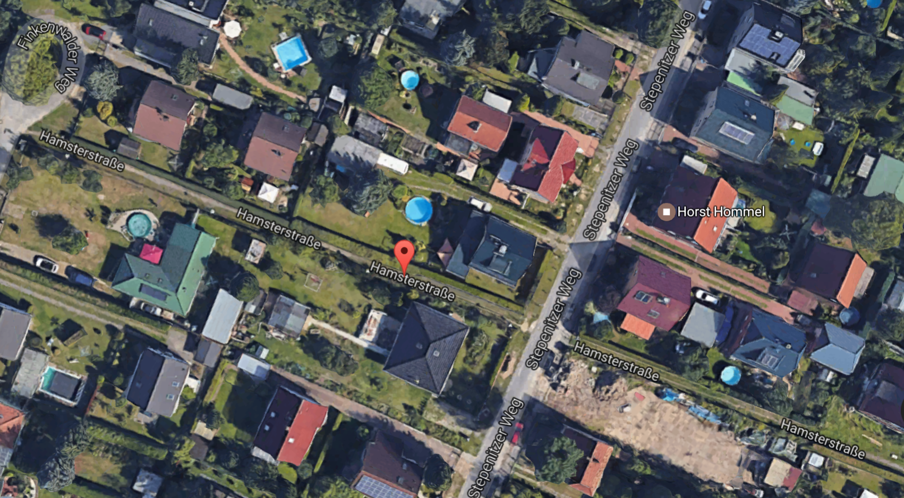

Favourite Hamster Haunts
26-Apr-2017 | Milku
I'm not hoping to interest the Ghost Adventures Crew here, just my thoughts on where hamsters may roam.
Although hamsters were discovered in Syria, we are also native to Greece, Romania, Belgium and northern China…albeit that we have made most countries our home over recent years.
But even before the situation in Syria deteriorated, Wild Syrian hamsters weren’t commonplace there. They certainly weren’t found outside of agricultural fields around Aleppo. I wonder where my ancestors roamed before humans started to cultivate the land in that part of the world. Did they move in to the wheat fields to enjoy some tasty seeds? Or did they adapt in situ when their natural habit was cleared to make way for agriculture?
I’ve been wondering too whether places that have ‘hamster’ in their name were also once home to hordes of hamsters...
However, I’ve had to acknowledge that Hamsterley Forest, a large area of woodland near Durham in the North East of England, might not suit a population of wild hamsters… even if it does claim to house many varieties of insects, reptiles and mammals. In the wild, hamsters like to live in warm, dry areas, like steppes, sand dunes and the edges of deserts. That really doesn’t describe England. We’ve got lovely sand dunes, but probably too much rain to suit my furry friends.
Kissimmee in Florida seems like it would welcome hamsters…there’s Hamster Lane, Hamster Court, Hamster Place…

And the Germans use hamster place names, like here in Hamsterstraße, Berlin.
But the obvious locale for any discerning hamster must be in the Netherlands…(H)Amsterdam, of course!